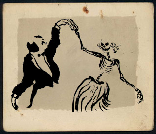
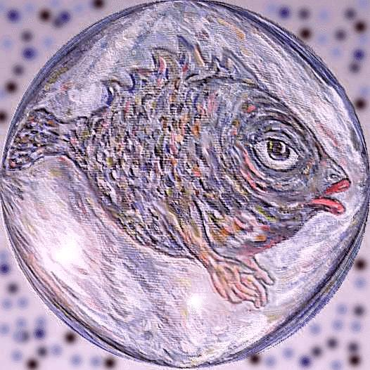
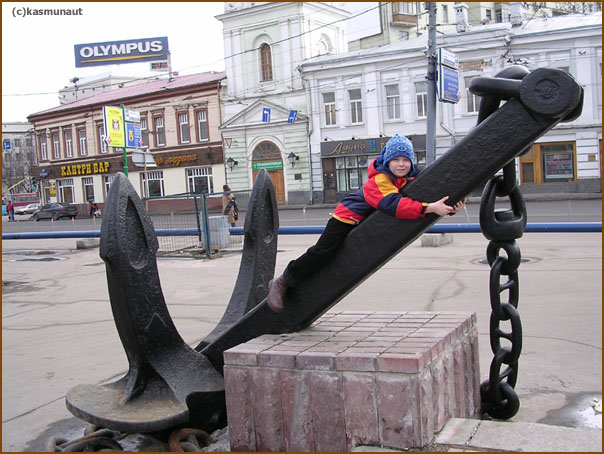
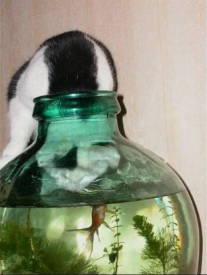
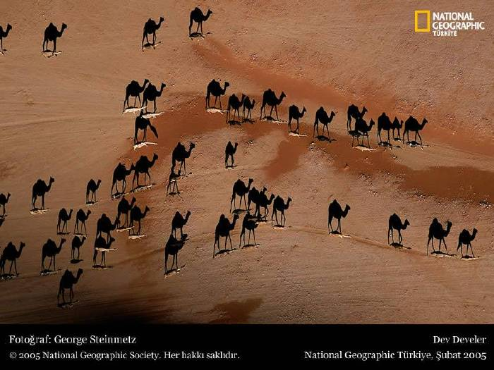
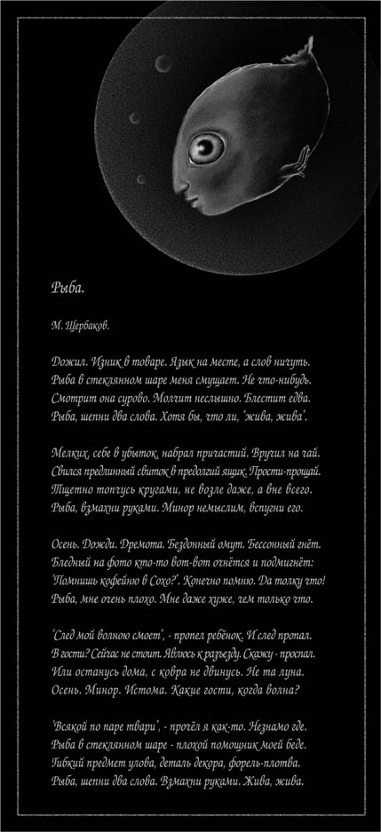
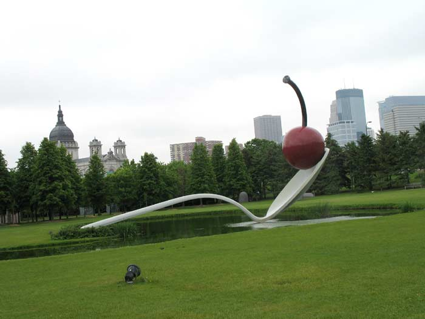
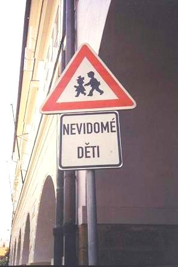
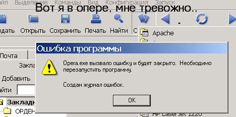

[Назад к списку картинок]
Данс-макабр
- иллюстрация к песне "Школа танцев 2" работы pinguinchen, оригинал здесь.
"Рыба, шепни два слова. Взмахни руками. Жива, жива"
- иллюстрация к песне "Рыба" работы Дмитрия Полонского. 1998 г. Холст, акрил, Photoshop. Подлинник хранится в городе Генте (Бельгия) в частной коллекции.
"Вот и якорь стальней стальнейшего..."
- иллюстрация к песне "Красные ворота".
Москва, угол Садового кольца и Покровки, у бывшего кинотеатра "Новороссийск". См. комментарий к песне.
"Рыба в стеклянном шаре меня смущает..."
- еще одна иллюстрация к песне "Рыба".
Иллюстрация к песне "Караван".

Иллюстрация к песне "Рыба"
- работа mosomedve-art. Оригинал здесь.
"и в ложке ягодка блестит, не донесённая до рта..." ("Вишнёвое варенье")

Claes Oldenburg (American, b. Sweden, 1929)
Coosje van Bruggen (Dutch, b. 1942)
Spoonbridge and Cherry, 1985-1988
aluminum, stainless steel, paint (9 x 15.7 x 4.1 m)
Gift of Frederick R. Weisman in honor of his parents, William and Mary Weisman, 1988
"Но в сквере, где паслись неведомые дети..."
С некоторой орфографической натяжкой этот дорожный знак может служить неплохой иллюстрацией к песне Щербакова "Варьете".

Прага, ул. Лоретанская, недалеко от здания МИДа. Май 2003 г.
"Жить подопечный будет..." ("Аллегро")
"Вот я в опере..." ("Травиата")

[Наверх]